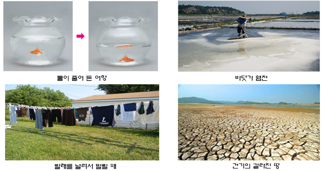

증발(蒸發, Evaporation)이란
- 증발(蒸; 데울/증발할:증, 發;피울:발, Evaporation) - 증발하여 피어오름
- 증발은 상온에서 입자가 액체의 표면에서 스스로의 운동으로 인해 액체의 표면에서 떨어져 나가는 현상을 말한다.
증발이 일어나는 이유
모든 물질은 가장 안정된 형태로 평형을 이루고자 하기 때문에 액체와 기체 사이에 입자가 이동하며,
이 이동이 평행화하는 상태까지 계속된다.
휘발성이 조금이라도 있는 물질은 저마다 고유한 포화증기압이있으며,
공기중으로 증발한 그 물질은 증기압이 포화증기압에 다다를때까지 계속 증발하게 된다.
일종의 확산의 원리이다.
상온 상태에 둔 액체, 예를들어 물은 액체와 기체 사이에 물분자를 활발히 이동하여
이 포화증기압의 상태까지 액체가 기체로 증발하게 된다.
그리고 특정 온도에서 증발하려는 힘을 증기압이라고 한다.
이 증기압력이 클수록 액체는 빨리 증발하게 된다.
물을 예로 들때를 보면 포화상태의 공기중 수분의 분압은 그 온도에서의 증기압과 일치한다.
증발이 잘 일어나는 조건
- 온도가 높을수록 - 뜨거운 바람으로 머리를 말릴때
- 습도가 낮을수록 - 건조할수록 빨래가 잘 마름
- 바람이 강할수록 - 선풍기로 젖은 욕실을 말릴때
- 표면적이 넓을수록 - 빨래를 넓게 펴서 널어야 빨리 마름
증발의 예
증발과 끓음의 차이
(1) 증발(Evaporation)
증발은 액체의 표면에서 액체상태의 입자가 기체상태로 변하는 현상으로 온도와 상관없이 일어난다.물 입자 중 활발하게 움직이는 물 입자가 인력을 뿌리치고 공기 중으로 날아가 버리는며,
온도가 높을수록(에너지를 많이 가지고 있으므로), 표면적이 넓을 수록(물 입자가 빠져나갈 수 있는 범위가 넓으므로)
물의 표면에서 증발이 잘 일어나게 된다.
(2) 끓음(Boiling)
끓음은 입자가 외부에서 열에너지를 받아서 액체의 표면과 내부에서 기화되는 현상이다.예를들어 물은 일정한 압력(1기압)일 때 특정 온도인 끓는점(100˚C)에서 액체 표면의 증발 외에
액체 내부에서도 강렬하게 기체 상태로 변한다.